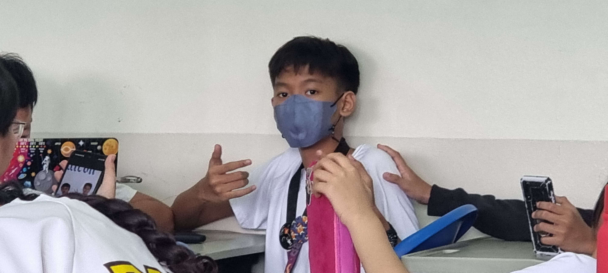

About Us!
Hello! We are Paul Santiago and Heid Sumogba, the creators of this website. We are students from Philippine Science High School - Main Campus and we made this website as a project for our Computer Science 3 class. We both enjoy watching anime and playing video games just like any other ordinary high school student. We have made this website to show our love for an anime called "Bocchi the Rock!" since the contents of this website is all about the main band that is seen in the anime. We hope you enjoy our website!
If you have concerns or questions, don't hesitate to contact us through email(b2027hksumogba@pshs.edu.ph and b2027pnsantiago@pshs.edu.ph) or discord(@tomatowizard360 and @polygonee).
